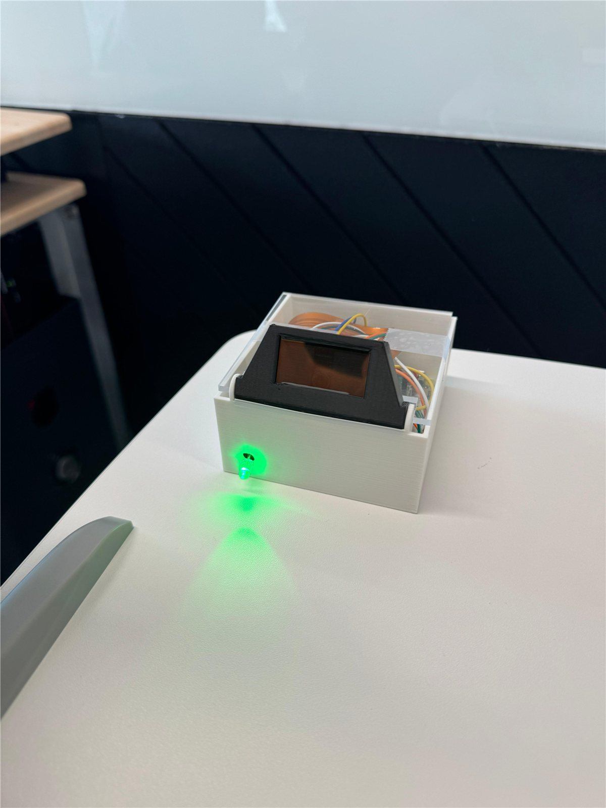
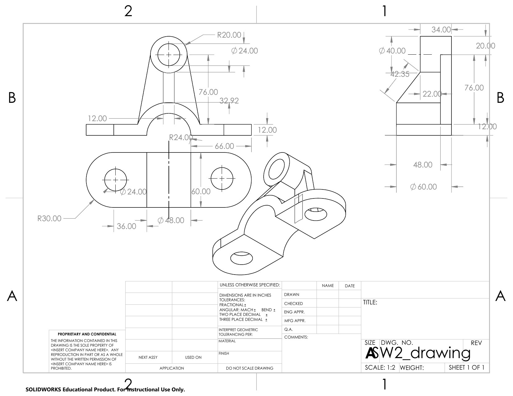
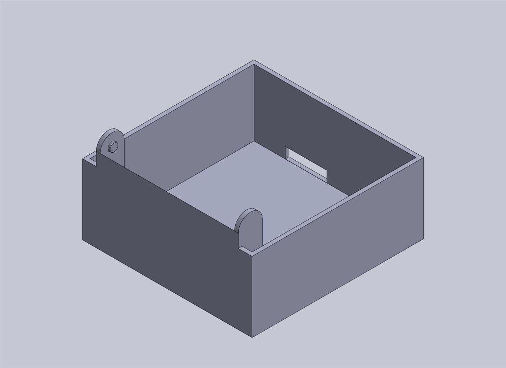
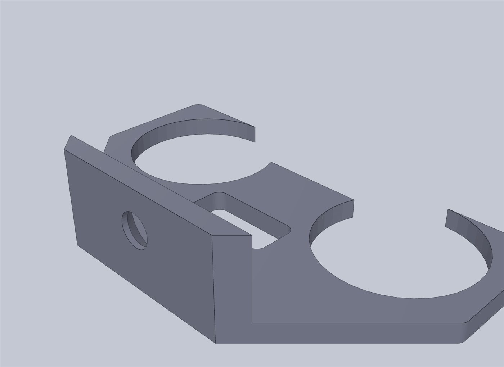

Kai Wicke
Mechanical Engineering student at Northeastern. I build robots and software.
Looking for a Summer 2027 co-op, ideally where engineering meets AI. I also build websites for local businesses.
Work
-
 Plane Stress FEA 2026
A 2D finite element solver I wrote from scratch, checked against textbook solutions.
TypeScript · finite element methods
Plane Stress FEA 2026
A 2D finite element solver I wrote from scratch, checked against textbook solutions.
TypeScript · finite element methods
-

FocusFinder 2026 A desk robot whose eyes follow you and that notices when you stop paying attention. SolidWorks · Raspberry Pi · MediaPipe -
 Autonomous car 2025
A small robot car that finds its own way through a maze with three ultrasonic sensors.
Raspberry Pi Pico · MicroPython
Autonomous car 2025
A small robot car that finds its own way through a maze with three ultrasonic sensors.
Raspberry Pi Pico · MicroPython
-
 SwingIQ 2026
A free golf swing analyser that tracks your body in the browser and gives you drills.
React · MediaPipe pose tracking
SwingIQ 2026
A free golf swing analyser that tracks your body in the browser and gives you drills.
React · MediaPipe pose tracking
-
 chess.ai 2026
A chess trainer that turns your own mistakes into puzzles, with bots and a live coach.
Next.js · Stockfish
chess.ai 2026
A chess trainer that turns your own mistakes into puzzles, with bots and a live coach.
Next.js · Stockfish
-
 Life OS 2026
My daily dashboard, and a morning briefing Siri reads to me even when my computer is off.
Node.js · Vercel · Siri Shortcuts
Life OS 2026
My daily dashboard, and a morning briefing Siri reads to me even when my computer is off.
Node.js · Vercel · Siri Shortcuts
Earlier: a catapult for a regional Maker Faire competition in 2020. It was the first thing I engineered, and the reason I chose mechanical engineering.
CAD
Parts I’ve modelled in SolidWorks. The FocusFinder enclosure has its own section on the FocusFinder page.




About
I’m in my second year of Mechanical Engineering at Northeastern. I spent my first year at NU London and I’m now in Boston. I’m most interested in projects where CAD, electronics and code meet, like the robots above, and I want to learn how AI is used in engineering.
I’ve worked at Ole Factorie Candles in Oakland, where I ran events, managed orders for big clients including Oakland International Airport, and built the company website. Before that I tutored maths and chemistry and was a summer camp counselor.
Outside class I play golf and chess, lift, and do a lot of maths.